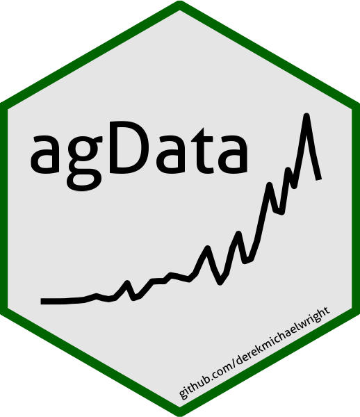
Data Sources
FAO Food and Agriculture Organization of the United Nations fao.org/faostat/STATCAN Statistics Canada statcan.gc.ca/USDA United States Department of Agriculture usda.gov/ISAAA International Service for the Acquisition of Agri-biotech Applications isaaa.org/
Instalation
devtools::install_github("derekmichaelwright/agData")
library(agData) # Loads: tidyverse, ggpubr, ggbeeswarm, ggrepel
This will also the load the following packages: tidyverse, ggpubr, ggbeeswarm & ggrepel.
theme_agData
xx <- data.frame(x = 1:10, y = 1:10, color = rep(c("1","2"), times = 5, each = 2))
mp <- ggplot(xx, aes(x = x, y = y, color = color)) +
geom_point(size = 4) + facet_grid(.~color)
mp

mp + theme_agData()

mp + theme_agData(legend.position = "none")

mp + theme_agData(linesize = 1.5,
bgFill = alpha("darkgreen",0.2),
stripFill = alpha("darkred",0.2),
lineColor = "darkorange",
axis.text.x = element_text(angle = 90, hjust = 1, vjust = 0.5))

agData_FAO_Country_Table
DT::datatable(agData_FAO_Country_Table)
agData_FAO_Region_Table
DT::datatable(agData_FAO_Region_Table)
agData_FAO_Crops
# Get Data
xx <- agData_FAO_Crops %>% as_tibble()
xx
## # A tibble: 1,848,653 x 6
## Area Year Crop Measurement Unit Value
## <fct> <dbl> <chr> <fct> <chr> <dbl>
## 1 Algeria 1961 Almonds, with shell Area harvested hectares 13300
## 2 Algeria 1961 Almonds, with shell Yield t/ha 0.451
## 3 Algeria 1961 Almonds, with shell Production tonnes 6000
## 4 Argentina 1961 Almonds, with shell Production tonnes 80
## 5 Bulgaria 1961 Almonds, with shell Production tonnes 2097
## 6 China 1961 Almonds, with shell Production tonnes 5000
## 7 Cyprus 1961 Almonds, with shell Area harvested hectares 5800
## 8 Cyprus 1961 Almonds, with shell Yield t/ha 0.420
## 9 Cyprus 1961 Almonds, with shell Production tonnes 2438
## 10 France 1961 Almonds, with shell Production tonnes 3680
## # ... with 1,848,643 more rows
# List Measurements
xx %>% distinct(Measurement, Unit)
## # A tibble: 3 x 2
## Measurement Unit
## <fct> <chr>
## 1 Area harvested hectares
## 2 Yield t/ha
## 3 Production tonnes
# List Crops
xx %>% distinct(Crop)
## # A tibble: 171 x 1
## Crop
## <chr>
## 1 Almonds, with shell
## 2 Anise, badian, fennel, coriander
## 3 Apples
## 4 Apricots
## 5 Areca nuts
## 6 Artichokes
## 7 Asparagus
## 8 Avocados
## 9 Bambara beans
## 10 Bananas
## # ... with 161 more rows
# Spread data to wide format
xx %>% select(-Unit) %>% spread(Measurement, Value) %>% arrange(Year)
## # A tibble: 722,033 x 6
## Area Year Crop `Area harvested` Production Yield
## <fct> <dbl> <chr> <dbl> <dbl> <dbl>
## 1 Afghanistan 1961 Apples 2220 15100 6.80
## 2 Afghanistan 1961 Apricots 4820 32000 6.64
## 3 Afghanistan 1961 Barley 350000 378000 1.08
## 4 Afghanistan 1961 Cotton lint NA 17000 NA
## 5 Afghanistan 1961 Cottonseed NA 34000 NA
## 6 Afghanistan 1961 Figs 3200 8000 2.5
## 7 Afghanistan 1961 Grapes 50000 225000 4.5
## 8 Afghanistan 1961 Linseed 46800 17000 0.363
## 9 Afghanistan 1961 Maize 500000 700000 1.4
## 10 Afghanistan 1961 Melons, other (inc.cant~ 3300 15700 4.76
## # ... with 722,023 more rows
# Prep data for an example plot
xx <- xx %>% filter(Area == "World", Crop == "Lentils", Measurement == "Production")
# Plot
mp <- ggplot(xx, aes(x = Year, y = Value / 1000000, group = Area)) +
geom_line() +
theme_agData() +
labs(title = "Global Lentil Production",
y = "Million Tonnes", x = NULL)
ggsave("Intro_agData_FAO_Crops.png", mp, width = 6, height = 4)
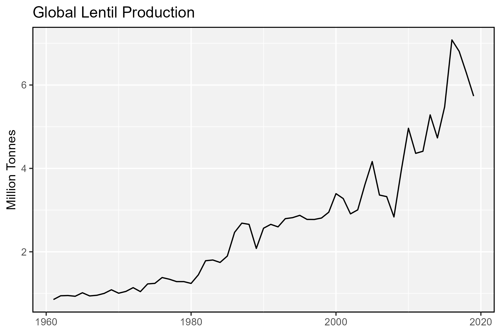
agData_FAO_Crops2
# Get Data
xx <- agData_FAO_Crops2 %>% as_tibble()
xx
## # A tibble: 600,533 x 6
## Area Year Crop Measurement Unit Value
## <fct> <dbl> <chr> <fct> <chr> <dbl>
## 1 Colombia 1961 Agave fibres nes Area harvested hectares 13500
## 2 Colombia 1961 Agave fibres nes Yield t/ha 1.26
## 3 Colombia 1961 Agave fibres nes Production tonnes 17000
## 4 Cuba 1961 Agave fibres nes Area harvested hectares 10000
## 5 Cuba 1961 Agave fibres nes Yield t/ha 1.11
## 6 Cuba 1961 Agave fibres nes Production tonnes 11100
## 7 El Salvador 1961 Agave fibres nes Area harvested hectares 5000
## 8 El Salvador 1961 Agave fibres nes Yield t/ha 0.68
## 9 El Salvador 1961 Agave fibres nes Production tonnes 3400
## 10 Guatemala 1961 Agave fibres nes Area harvested hectares 500
## # ... with 600,523 more rows
# List Measurements
xx %>% distinct(Measurement, Unit)
## # A tibble: 3 x 2
## Measurement Unit
## <fct> <chr>
## 1 Area harvested hectares
## 2 Yield t/ha
## 3 Production tonnes
# List Crops
xx %>% distinct(Crop)
## # A tibble: 30 x 1
## Crop
## <chr>
## 1 Agave fibres nes
## 2 Bastfibres, other
## 3 Berries nes
## 4 Cereals nes
## 5 Cereals
## 6 Citrus Fruit
## 7 Fibre crops nes
## 8 Fibre Crops Primary
## 9 Fruit Primary
## 10 Fruit, citrus nes
## # ... with 20 more rows
# Spread data to wide format
xx %>% select(-Unit) %>% spread(Measurement, Value) %>% arrange(Year)
## # A tibble: 207,655 x 6
## Area Year Crop `Area harvested` Production Yield
## <fct> <dbl> <chr> <dbl> <dbl> <dbl>
## 1 Afghanistan 1961 Berries nes 6800 60000 8.82
## 2 Afghanistan 1961 Cereals 3313500 3695000 1.12
## 3 Afghanistan 1961 Citrus Fruit 2160 15000 6.94
## 4 Afghanistan 1961 Fibre Crops Primary 76892 NA NA
## 5 Afghanistan 1961 Fruit Primary 108699 567200 5.22
## 6 Afghanistan 1961 Fruit, citrus nes 730 4900 6.71
## 7 Afghanistan 1961 Fruit, fresh nes 13919 71200 5.12
## 8 Afghanistan 1961 Fruit, stone nes 2850 18100 6.35
## 9 Afghanistan 1961 Nuts nes 7000 10500 1.5
## 10 Afghanistan 1961 Oilcrops 165792 101300 0.611
## # ... with 207,645 more rows
# Prep data for an example plot
xx <- xx %>% filter(Area == "World", Crop == "Cereals", Measurement == "Yield")
# Plot
mp <- ggplot(xx, aes(x = Year, y = Value, group = Area)) +
geom_line() +
theme_agData() +
labs(title = "Global Cereal Yields",
y = "Tonnes / Hectare", x = NULL)
ggsave("Intro_agData_FAO_Crops2.png", mp, width = 6, height = 4)
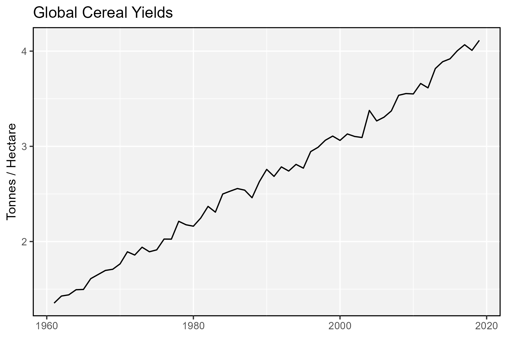
agData_FAO_Fertilizers
# Get Data
xx <- agData_FAO_Fertilizers %>% as_tibble()
xx
## # A tibble: 474,281 x 6
## Area Year Item Measurement Unit Value
## <fct> <dbl> <chr> <chr> <chr> <dbl>
## 1 Afghanistan 1961 Nitrogenous fertilizers Import Quantity tonnes 1000
## 2 Afghanistan 1961 Phosphate fertilizers Import Quantity tonnes 100
## 3 Afghanistan 1961 Total Fertilizers Import Quantity tonnes 1100
## 4 Albania 1961 Ammonium nitrate (AN) Import Quantity tonnes 3187
## 5 Albania 1961 Nitrogenous fertilizers Import Quantity tonnes 3187
## 6 Albania 1961 Phosphate fertilizers Import Quantity tonnes 2433
## 7 Albania 1961 Potash fertilizers Import Quantity tonnes 682
## 8 Albania 1961 Single Superphosphate Import Quantity tonnes 2433
## 9 Albania 1961 Total Fertilizers Import Quantity tonnes 6302
## 10 Algeria 1961 Nitrogenous fertilizers Import Quantity tonnes 9000
## # ... with 474,271 more rows
# List Measurements
xx %>% distinct(Measurement, Unit)
## # A tibble: 6 x 2
## Measurement Unit
## <chr> <chr>
## 1 Import Quantity tonnes
## 2 Production tonnes
## 3 Agricultural Use tonnes
## 4 Export Quantity tonnes
## 5 Import Value 1000 US$
## 6 Export Value 1000 US$
# List Crops
xx %>% distinct(Item)
## # A tibble: 50 x 1
## Item
## <chr>
## 1 Nitrogenous fertilizers
## 2 Phosphate fertilizers
## 3 Total Fertilizers
## 4 Ammonium nitrate (AN)
## 5 Potash fertilizers
## 6 Single Superphosphate
## 7 Ammonium Phosphate (N)
## 8 Ammonium sulphate
## 9 Ammonium SulphateNitrate
## 10 Basic Slag
## # ... with 40 more rows
# Prep data for an example plot
xx <- xx %>% filter(Area == "China",
Item == "Nitrogenous fertilizers",
Measurement == "Agricultural Use")
# Plot
mp <- ggplot(xx, aes(x = Year, y = Value / 1000000, group = Measurement)) +
geom_line() +
theme_agData() +
labs(title = "Nitrogenous fertilizer use in China",
y = "Million Tonnes", x = NULL)
ggsave("Intro_agData_FAO_Fertilizers.png", mp, width = 6, height = 4)
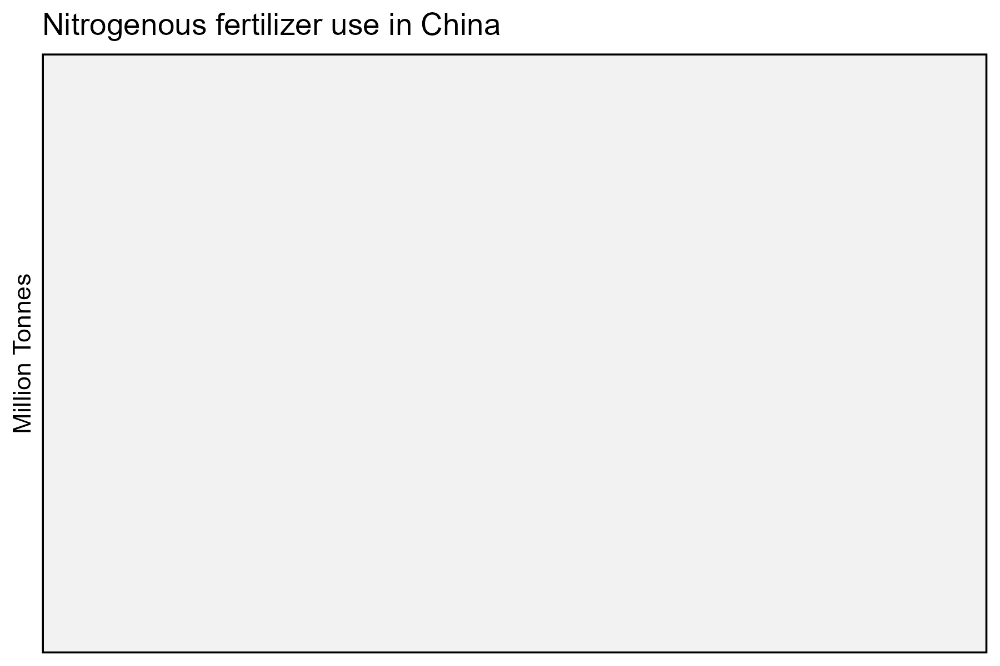
agData_FAO_LandUse
# Get Data
xx <- agData_FAO_LandUse %>% as_tibble()
xx
## # A tibble: 190,993 x 6
## Area Year Item Measurement Unit Value
## <fct> <dbl> <chr> <chr> <chr> <dbl>
## 1 Afghanistan 1961 Country area Area 1000 hecta~ 65286
## 2 Afghanistan 1961 Land area Area 1000 hecta~ 65223
## 3 Afghanistan 1961 Agriculture Area 1000 hecta~ 37700
## 4 Afghanistan 1961 Agricultural land Area 1000 hecta~ 37700
## 5 Afghanistan 1961 Cropland Area 1000 hecta~ 7700
## 6 Afghanistan 1961 Arable land Area 1000 hecta~ 7650
## 7 Afghanistan 1961 Land under permanent crops Area 1000 hecta~ 50
## 8 Afghanistan 1961 Land under perm. meadows and~ Area 1000 hecta~ 30000
## 9 Afghanistan 1961 Inland waters Area 1000 hecta~ 63
## 10 Afghanistan 1961 Land area equipped for irrig~ Area 1000 hecta~ 2380
## # ... with 190,983 more rows
# List Measurements
xx %>% distinct(Measurement, Unit)
## # A tibble: 2 x 2
## Measurement Unit
## <chr> <chr>
## 1 Area 1000 hectares
## 2 Carbon stock in living biomass million tonnes
# List Crops
xx %>% distinct(Item)
## # A tibble: 46 x 1
## Item
## <chr>
## 1 Country area
## 2 Land area
## 3 Agriculture
## 4 Agricultural land
## 5 Cropland
## 6 Arable land
## 7 Land under permanent crops
## 8 Land under perm. meadows and pastures
## 9 Inland waters
## 10 Land area equipped for irrigation
## # ... with 36 more rows
# Prep data for an example plot
xx <- xx %>% filter(Area == "World", Item == "Agricultural land")
# Plot
mp <- ggplot(xx, aes(x = Year, y = Value / 1000000, group = Area)) +
geom_line() +
theme_agData() +
labs(title = "Global Agricultural Area",
y = "Billion Hectares", x = NULL)
ggsave("Intro_agData_FAO_LandUse.png", mp, width = 6, height = 4)
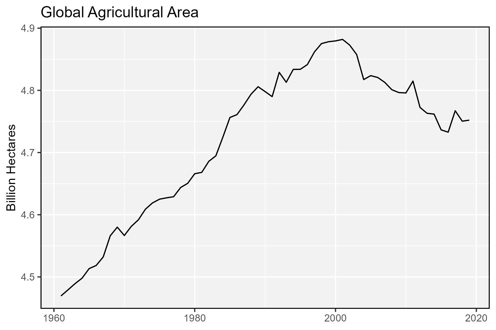
agData_FAO_Livestock
# Get Data
xx <- agData_FAO_Livestock %>% as_tibble()
xx
## # A tibble: 1,133,753 x 6
## Area Year Animal Measurement Unit Value
## <fct> <dbl> <chr> <fct> <chr> <dbl>
## 1 Afghanistan 1961 Asses Stocks number 1300000
## 2 Albania 1961 Asses Stocks number 57100
## 3 Algeria 1961 Asses Stocks number 315000
## 4 Angola 1961 Asses Stocks number 3100
## 5 Antigua and Barbuda 1961 Asses Stocks number 2300
## 6 Argentina 1961 Asses Stocks number 129000
## 7 Australia 1961 Asses Stocks number 5000
## 8 Barbados 1961 Asses Stocks number 2000
## 9 Benin 1961 Asses Stocks number 737
## 10 Bhutan 1961 Asses Stocks number 12000
## # ... with 1,133,743 more rows
# List Measurements
xx %>% distinct(Measurement, Unit)
## # A tibble: 10 x 2
## Measurement Unit
## <fct> <chr>
## 1 Stocks number
## 2 Yield/Carcass Weight hg/An
## 3 Production tonnes
## 4 Producing Animals/Slaughtered number
## 5 Yield hg
## 6 Yield 100mg/An
## 7 Laying number
## 8 Production 1000 No
## 9 Yield hg/An
## 10 Yield/Carcass Weight 0.1g/An
# List Crops
xx %>% distinct(Animal)
## # A tibble: 103 x 1
## Animal
## <chr>
## 1 Asses
## 2 Beef and Buffalo Meat
## 3 Beehives
## 4 Beeswax
## 5 Buffaloes
## 6 Butter and Ghee
## 7 Butter and ghee, sheep milk
## 8 Butter, buffalo milk
## 9 Butter, cow milk
## 10 Camelids, other
## # ... with 93 more rows
# Prep data for an example plot
xx <- xx %>% filter(Area == "Canada", Animal == "Chickens")
# Plot
mp <- ggplot(xx, aes(x = Year, y = Value / 1000000, group = Area)) +
geom_line() +
theme_agData() +
labs(title = "Chicken Production in Canada",
y = "Million Animals", x = NULL)
ggsave("Intro_agData_FAO_Livestock.png", mp, width = 6, height = 4)
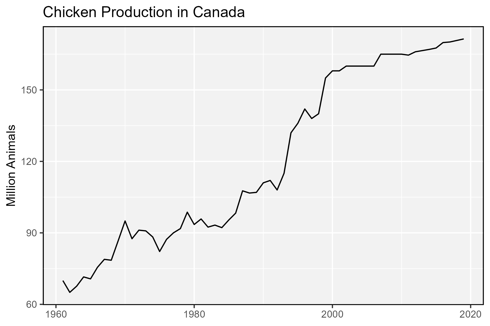
agData_FAO_Population
# Get Data
xx <- agData_FAO_Population %>% as_tibble()
# List Measurements
xx %>% distinct(Measurement, Unit)
## # A tibble: 5 x 2
## Measurement Unit
## <chr> <chr>
## 1 Total People
## 2 Male People
## 3 Female People
## 4 Rural People
## 5 Urban People
# Prep data for an example plot
xx <- xx %>% filter(Area == "World", Measurement == "Total")
# Plot
mp <- ggplot(xx, aes(x = Year, y = Value / 1000000000, group = Measurement)) +
geom_line() +
theme_agData() +
labs(title = "World Population",
y = "Billion", x = NULL)
ggsave("Intro_agData_FAO_Population.png", mp, width = 6, height = 4)
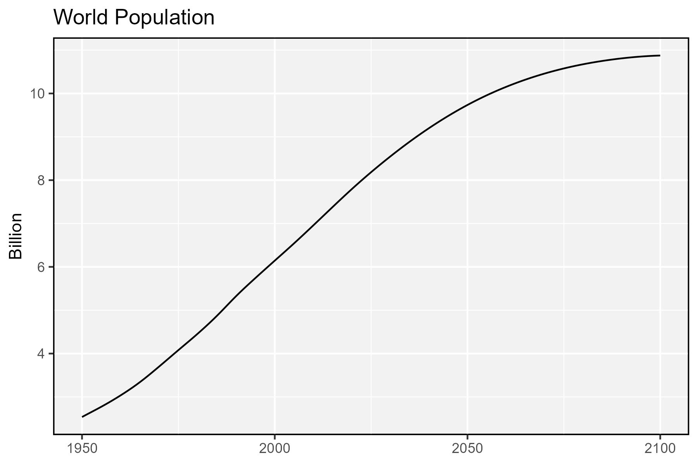
agData_FAO_Trade
# Get Data
xx <- agData_FAO_Trade %>% as_tibble()
xx
## # A tibble: 10,794,952 x 6
## Area Year Crop Measurement Unit Value
## <fct> <dbl> <chr> <chr> <chr> <dbl>
## 1 Afghanistan 1961 Butter, cow milk Import Quantity tonnes 23
## 2 Afghanistan 1961 Butter, cow milk Import Value USD 16000
## 3 Afghanistan 1961 Cheese, whole cow milk Import Quantity tonnes 3
## 4 Afghanistan 1961 Cheese, whole cow milk Import Value USD 2000
## 5 Afghanistan 1961 Cigarettes Import Quantity tonnes 150
## 6 Afghanistan 1961 Cigarettes Import Value USD 526000
## 7 Afghanistan 1961 Cotton lint Export Quantity tonnes 11480
## 8 Afghanistan 1961 Cotton lint Export Value USD 8320000
## 9 Afghanistan 1961 Cottonseed Export Quantity tonnes 3050
## 10 Afghanistan 1961 Cottonseed Export Value USD 227000
## # ... with 10,794,942 more rows
# List Measurements
xx %>% distinct(Measurement, Unit)
## # A tibble: 10 x 2
## Measurement Unit
## <chr> <chr>
## 1 Import Quantity tonnes
## 2 Import Value USD
## 3 Export Quantity tonnes
## 4 Export Value USD
## 5 Import Quantity Head
## 6 Import Quantity 1000 Head
## 7 Export Quantity Head
## 8 Export Quantity 1000 Head
## 9 Import Quantity No
## 10 Export Quantity No
# List Crops
xx %>% distinct(Crop)
## # A tibble: 478 x 1
## Crop
## <chr>
## 1 Butter, cow milk
## 2 Cheese, whole cow milk
## 3 Cigarettes
## 4 Cotton lint
## 5 Cottonseed
## 6 Fruit, fresh nes
## 7 Grapes
## 8 Hides, cattle, wet salted
## 9 Linseed
## 10 Milk, skimmed dried
## # ... with 468 more rows
# Prep data for an example plot
xx <- xx %>% filter(Area == "India", Crop == "Lentils", Measurement == "Import Quantity")
# Plot
mp <- ggplot(xx, aes(x = Year, y = Value / 1000000, group = Measurement)) +
geom_line() +
theme_agData() +
labs(title = "Lentil Imports in India",
y = "Million Tonnes", x = NULL)
ggsave("Intro_agData_FAO_Trade.png", mp, width = 6, height = 4)
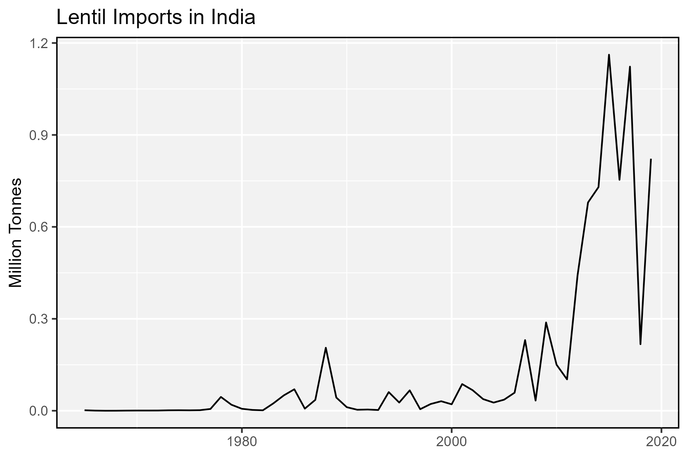
agData_STATCAN_Region_Table
DT::datatable(agData_STATCAN_Region_Table)
agData_STATCAN_Beehives
# Get Data
xx <- agData_STATCAN_Beehives %>% as_tibble()
xx
## # A tibble: 7,460 x 5
## Area Year Measurement Value Unit
## <fct> <int> <fct> <dbl> <fct>
## 1 Alberta 1924 Beekeepers 0.16 Thousand
## 2 British Columbia 1924 Beekeepers 2.41 Thousand
## 3 Canada 1924 Beekeepers 22.2 Thousand
## 4 Manitoba 1924 Beekeepers 1.26 Thousand
## 5 New Brunswick 1924 Beekeepers 0.36 Thousand
## 6 Nova Scotia 1924 Beekeepers 0.2 Thousand
## 7 Ontario 1924 Beekeepers 10 Thousand
## 8 Prince Edward Island 1924 Beekeepers 0.005 Thousand
## 9 Quebec 1924 Beekeepers 7.4 Thousand
## 10 Saskatchewan 1924 Beekeepers 0.41 Thousand
## # ... with 7,450 more rows
# List Measurements
xx %>% distinct(Measurement, Unit)
## # A tibble: 8 x 2
## Measurement Unit
## <fct> <fct>
## 1 Beekeepers Thousand
## 2 Colonies Thousand
## 3 Production Million kg
## 4 Value of honey and wax Million CAD
## 5 Value of honey Million CAD
## 6 Colonies per beekeeper Number
## 7 Yield kg per colony
## 8 Value per colony CAD per colony
# Spread data to wide format
yy <- xx %>% select(-Unit) %>% spread(Measurement, Value) %>% arrange(Year)
str(yy)
## tibble [960 x 10] (S3: tbl_df/tbl/data.frame)
## $ Area : Factor w/ 10 levels "Canada","British Columbia",..: 1 2 3 4 5 6 7 8 9 10 ...
## $ Year : int [1:960] 1924 1924 1924 1924 1924 1924 1924 1924 1924 1924 ...
## $ Beekeepers : num [1:960] 22.2 2.41 0.16 0.41 1.26 ...
## $ Colonies : num [1:960] 280 14.6 0 1.2 10.8 ...
## $ Colonies per beekeeper: num [1:960] 13 6 0 3 9 16 12 6 6 18 ...
## $ Production : num [1:960] 16.84 0.679 0.055 0.079 0.651 ...
## $ Yield : num [1:960] 27.3 21.1 Inf 29.9 27.2 ...
## $ Value per colony : num [1:960] 7.45 10.21 Inf 15 9.04 ...
## $ Value of honey : num [1:960] 2.085 0.149 0.014 0.018 0.098 ...
## $ Value of honey and wax: num [1:960] 2.183 0.156 0.014 0.019 0.102 ...
# Prep data for an example plot
xx <- xx %>% filter(Area == "Saskatchewan", Measurement == "Colonies")
# Plot
mp <- ggplot(xx, aes(x = Year, y = Value / 1000, group = Area)) +
geom_line() +
theme_agData() +
labs(title = "Honeybee Colonies in Saskatchewan, Canada",
y = "Thousand Colonies", x = NULL)
ggsave("Intro_agData_STATCAN_Beehives.png", mp, width = 6, height = 4)
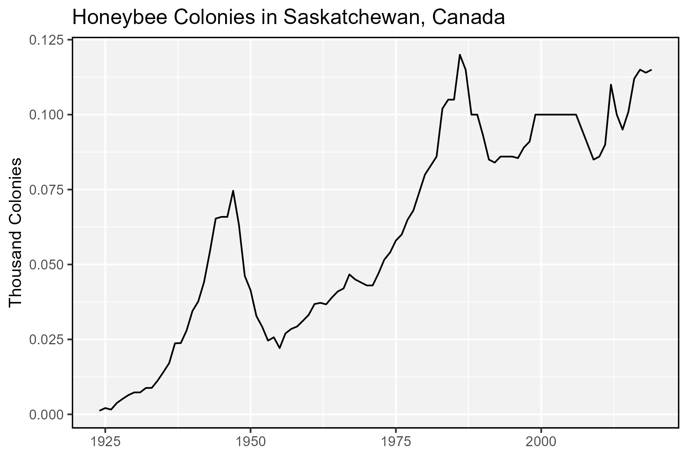
agData_STATCAN_Crops
# Get Data
xx <- agData_STATCAN_Crops %>% as_tibble()
xx
## # A tibble: 65,933 x 6
## Area Year Crop Measurement Unit Value
## <fct> <int> <chr> <fct> <chr> <dbl>
## 1 Canada 1908 Barley Seeded area ha 7.07e5
## 2 Canada 1908 Barley Yield kg/ha 1.44e3
## 3 Canada 1908 Barley Production tonnes 1.02e6
## 4 Canada 1908 Barley Average farm price dollars per tonne 2.1 e1
## 5 Maritime Provinces 1908 Barley Seeded area ha 7.7 e3
## 6 Maritime Provinces 1908 Barley Yield kg/ha 1.52e3
## 7 Maritime Provinces 1908 Barley Production tonnes 1.18e4
## 8 Maritime Provinces 1908 Barley Average farm price dollars per tonne 3.1 e1
## 9 Prince Edward Island 1908 Barley Seeded area ha 2.4 e3
## 10 Prince Edward Island 1908 Barley Yield kg/ha 1.66e3
## # ... with 65,923 more rows
# List Measurements
xx %>% distinct(Measurement, Unit)
## # A tibble: 5 x 2
## Measurement Unit
## <fct> <chr>
## 1 Seeded area ha
## 2 Yield kg/ha
## 3 Production tonnes
## 4 Average farm price dollars per tonne
## 5 Harvested area ha
# List Crops
xx %>% distinct(Crop)
## # A tibble: 28 x 1
## Crop
## <chr>
## 1 Barley
## 2 Beans
## 3 Borage seed
## 4 Buckwheat
## 5 Canary seed
## 6 Canola
## 7 Caraway seed
## 8 Chick peas
## 9 Coriander seed
## 10 Corn for grain
## # ... with 18 more rows
# Prep data for an example plot
xx <- xx %>% filter(Area == "Saskatchewan", Crop == "Canola", Measurement == "Production")
# Plot
mp <- ggplot(xx, aes(x = Year, y = Value / 1000000, group = Area)) +
geom_line() +
theme_agData() +
labs(title = "Canola Production in Saskatchewan, Canada",
y = "Million Tonnes", x = NULL)
ggsave("Intro_agData_STATCAN_Crops.png", mp, width = 6, height = 4)
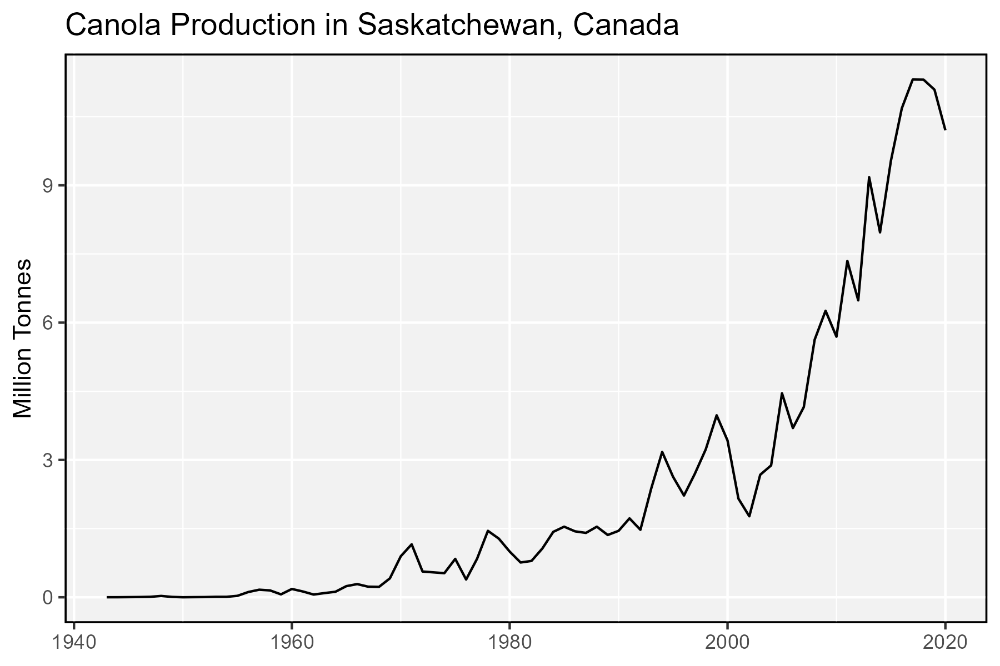
agData_STATCAN_FarmLand_Crops
# Get Data
xx <- agData_STATCAN_FarmLand_Crops %>% as_tibble()
xx
## # A tibble: 12,482 x 6
## Area Year Crop Measurement Unit Value
## <fct> <int> <chr> <chr> <chr> <int>
## 1 Canada 1921 Total wheat Number of farms reporting Number 3.81e5
## 2 Canada 1921 Total wheat Acres Acres 2.03e7
## 3 Canada 1921 Total wheat Hectares Hectares 8.21e6
## 4 Canada 1921 Total wheat Average area in acres per farm rep~ Acres 5.3 e1
## 5 Canada 1921 Oats Number of farms reporting Number 5.72e5
## 6 Canada 1921 Oats Acres Acres 1.42e7
## 7 Canada 1921 Oats Hectares Hectares 5.76e6
## 8 Canada 1921 Oats Average area in acres per farm rep~ Acres 2.5 e1
## 9 Canada 1921 Barley Number of farms reporting Number 2.17e5
## 10 Canada 1921 Barley Acres Acres 2.17e6
## # ... with 12,472 more rows
# List Measurements
xx %>% distinct(Measurement, Unit)
## # A tibble: 4 x 2
## Measurement Unit
## <chr> <chr>
## 1 Number of farms reporting Number
## 2 Acres Acres
## 3 Hectares Hectares
## 4 Average area in acres per farm reporting Acres
# List Crops
xx %>% distinct(Crop)
## # A tibble: 27 x 1
## Crop
## <chr>
## 1 Total wheat
## 2 Oats
## 3 Barley
## 4 Corn for grain
## 5 Flaxseed
## 6 Potatoes
## 7 Total tree fruits
## 8 Total vegetables (excluding greenhouse vegetables)
## 9 Spring wheat (excluding durum)
## 10 Durum wheat
## # ... with 17 more rows
# Prep data for an example plot
xx <- xx %>%
filter(Area == "Saskatchewan", Crop == "Total wheat",
Measurement == "Number of farms reporting") %>%
filter(!is.na(Value))
# Plot
mp <- ggplot(xx, aes(x = Year, y = Value, group = Area)) +
geom_line() +
theme_agData() +
labs(title = "Number of Farms Growing Wheat in Saskatchewan, Canada",
y = "Million Tonnes", x = NULL)
ggsave("Intro_agData_STATCAN_FarmLand_Crops.png", mp, width = 6, height = 4)
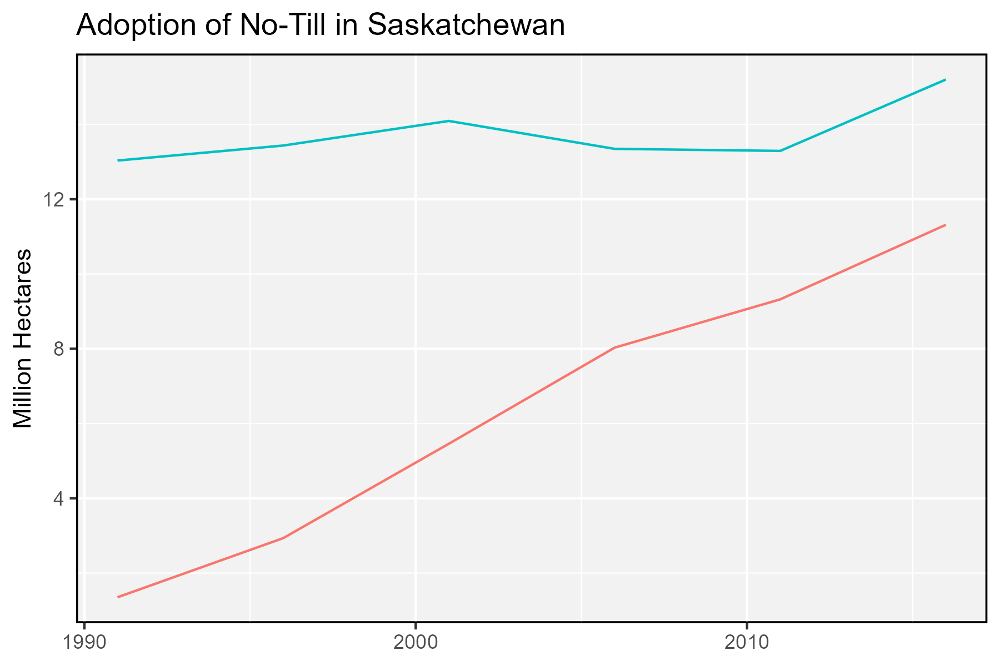
agData_STATCAN_FarmLand_NoTill
# Get Data
xx <- agData_STATCAN_FarmLand_NoTill %>% as_tibble()
xx
## # A tibble: 264 x 6
## Area Year Item Measurement Unit Value
## <fct> <int> <chr> <chr> <chr> <int>
## 1 Canada 1991 Total land pre~ Number of farms~ Numb~ 2.10e5
## 2 Canada 1991 Total land pre~ Hectares Hect~ 2.90e7
## 3 Canada 1991 No-till seedin~ Number of farms~ Numb~ 1.76e4
## 4 Canada 1991 No-till seedin~ Hectares Hect~ 1.95e6
## 5 Newfoundland and Labrador 1991 Total land pre~ Number of farms~ Numb~ 3.29e2
## 6 Newfoundland and Labrador 1991 Total land pre~ Hectares Hect~ 2.05e3
## 7 Newfoundland and Labrador 1991 No-till seedin~ Number of farms~ Numb~ 2.8 e1
## 8 Newfoundland and Labrador 1991 No-till seedin~ Hectares Hect~ 1.69e2
## 9 Prince Edward Island 1991 Total land pre~ Number of farms~ Numb~ 1.87e3
## 10 Prince Edward Island 1991 Total land pre~ Hectares Hect~ 1.12e5
## # ... with 254 more rows
# List Measurements
xx %>% distinct(Measurement, Unit)
## # A tibble: 2 x 2
## Measurement Unit
## <chr> <chr>
## 1 Number of farms reporting Number
## 2 Hectares Hectares
# Prep data for an example plot
xx <- xx %>%
filter(Area == "Saskatchewan",
Unit == "Hectares") %>%
filter(!is.na(Value))
# Plot
mp <- ggplot(xx, aes(x = Year, y = Value / 1000000, color = Item)) +
geom_line() +
theme_agData(legend.position = "none") +
labs(title = "Adoption of No-Till in Saskatchewan",
y = "Million Hectares", x = NULL)
ggsave("Intro_agData_STATCAN_FarmLand_Crops.png", mp, width = 6, height = 4)
agData_STATCAN_FarmLand_Size
# Get Data
xx <- agData_STATCAN_FarmLand_Size %>% as_tibble()
xx
## # A tibble: 1,485 x 5
## Area Year Measurement Unit Value
## <fct> <int> <fct> <chr> <int>
## 1 Canada 1976 Total number of farms Number 338552
## 2 Canada 1976 Under 10 acres Number 14095
## 3 Canada 1976 10 to 69 acres Number 40573
## 4 Canada 1976 70 to 129 acres Number 44010
## 5 Canada 1976 130 to 179 acres Number 40693
## 6 Canada 1976 180 to 239 acres Number 24262
## 7 Canada 1976 240 to 399 acres Number 52859
## 8 Canada 1976 400 to 559 acres Number 31571
## 9 Canada 1976 560 to 759 acres Number 26616
## 10 Canada 1976 760 to 1,119 acres Number 29513
## # ... with 1,475 more rows
# List Measurements
xx %>% distinct(Measurement)
## # A tibble: 15 x 1
## Measurement
## <fct>
## 1 Total number of farms
## 2 Under 10 acres
## 3 10 to 69 acres
## 4 70 to 129 acres
## 5 130 to 179 acres
## 6 180 to 239 acres
## 7 240 to 399 acres
## 8 400 to 559 acres
## 9 560 to 759 acres
## 10 760 to 1,119 acres
## 11 1,120 to 1,599 acres
## 12 1,600 to 2,239 acres
## 13 2,240 to 2,879 acres
## 14 2,880 to 3,519 acres
## 15 3,520 acres and above
# Prep data for an example plot
xx <- xx %>%
filter(Area == "Saskatchewan", Year %in% c(1976, 2016),
Measurement != "Total number of farms")
# Plot
mp <- ggplot(xx, aes(x = Measurement, y = Value, group = Area)) +
geom_bar(stat = "identity") +
facet_grid(. ~ Year) +
theme_agData(axis.text.x = element_text(angle = 90, hjust = 1, vjust = 0.5)) +
labs(title = "Size of Farms in Saskatchewan",
y = "Number of Farms", x = NULL)
ggsave("Intro_agData_STATCAN_FarmLand_Size.png", mp, width = 6, height = 4)
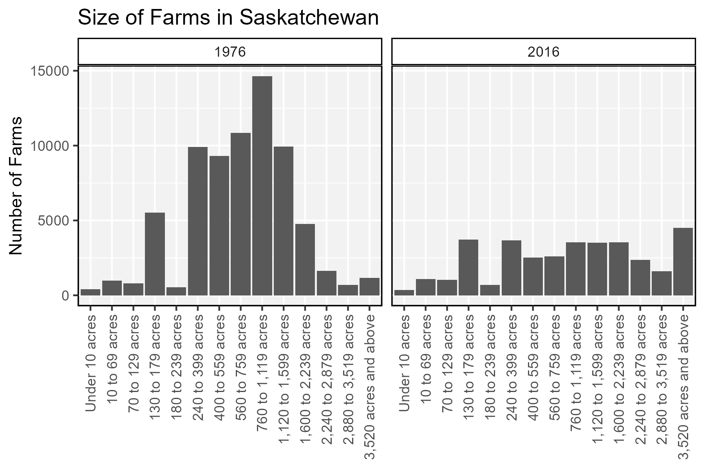
agData_STATCAN_FarmLand_Use
# Get Data
xx <- agData_STATCAN_FarmLand_Use %>% as_tibble()
xx
## # A tibble: 2,578 x 6
## Area Year Item Measurement Unit Value
## <fct> <int> <chr> <chr> <chr> <int>
## 1 Canada 1921 Total area of farms Number of farms~ Number 7.11e5
## 2 Canada 1921 Total area of farms Acres Acres 1.41e8
## 3 Canada 1921 Total area of farms Hectares Hecta~ 5.70e7
## 4 Canada 1921 Total area of farms Average area in~ Acres 1.98e2
## 5 Canada 1921 Land in crops Acres Acres 5.00e7
## 6 Canada 1921 Land in crops Hectares Hecta~ 2.02e7
## 7 Prince Edward Island 1921 Total area of farms Number of farms~ Number 1.37e4
## 8 Prince Edward Island 1921 Total area of farms Acres Acres 1.22e6
## 9 Prince Edward Island 1921 Total area of farms Hectares Hecta~ 4.92e5
## 10 Prince Edward Island 1921 Total area of farms Average area in~ Acres 8.9 e1
## # ... with 2,568 more rows
# List Measurements
xx %>% distinct(Measurement, Unit)
## # A tibble: 4 x 2
## Measurement Unit
## <chr> <chr>
## 1 Number of farms reporting Number
## 2 Acres Acres
## 3 Hectares Hectares
## 4 Average area in acres per farm reporting Acres
# List Items
xx %>% distinct(Item)
## # A tibble: 5 x 1
## Item
## <chr>
## 1 Total area of farms
## 2 Land in crops
## 3 Summerfallow land
## 4 Tame or seeded pasture
## 5 All other land
# Prep data for an example plot
xx <- xx %>% filter(Area == "Saskatchewan", Item == "Summerfallow land", Unit == "Hectares")
# Plot
mp <- ggplot(xx, aes(x = Year, y = Value / 1000000, group = Area)) +
geom_line() +
theme_agData() +
labs(title = "Summerfallow land in Saskatchewan, Canada",
y = "Million Hectares", x = NULL)
ggsave("Intro_agData_STATCAN_FarmLand_Use.png", mp, width = 6, height = 4)
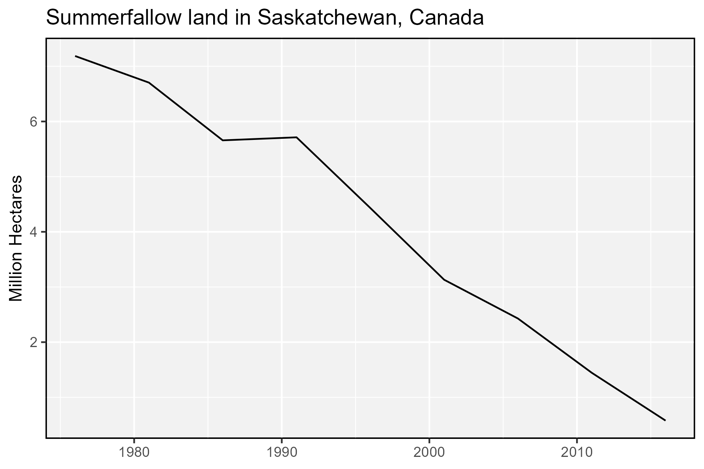
agData_STATCAN_Livestock
# Get Data
xx <- agData_STATCAN_Livestock %>% as_tibble()
xx
## # A tibble: 7,545 x 6
## Area Year Animal Measurement Unit Value
## <fct> <int> <chr> <chr> <chr> <int>
## 1 Canada 1921 Total cattle and calves Number of animals Number 8369489
## 2 Canada 1921 Total pigs Number of farms reporting Number 452935
## 3 Canada 1921 Total pigs Number of animals Number 3324291
## 4 Canada 1921 Total pigs Average number of animals Number 7
## 5 Canada 1921 Total sheep and lambs Number of farms reporting Number 161838
## 6 Canada 1921 Total sheep and lambs Number of animals Number 3200467
## 7 Canada 1921 Total sheep and lambs Average number of animals Number 20
## 8 Canada 1921 Horses and ponies Number of farms reporting Number 608272
## 9 Canada 1921 Horses and ponies Number of animals Number 3451752
## 10 Canada 1921 Horses and ponies Average number of animals Number 6
## # ... with 7,535 more rows
# List Measurements
xx %>% distinct(Measurement, Unit)
## # A tibble: 3 x 2
## Measurement Unit
## <chr> <chr>
## 1 Number of animals Number
## 2 Number of farms reporting Number
## 3 Average number of animals Number
# List Crops
xx %>% distinct(Animal)
## # A tibble: 26 x 1
## Animal
## <chr>
## 1 Total cattle and calves
## 2 Total pigs
## 3 Total sheep and lambs
## 4 Horses and ponies
## 5 Total hens and chickens (birds)
## 6 Dairy cows
## 7 Beef cows
## 8 Total heifers
## 9 Bulls, 1 year and over
## 10 Steers, 1 year and over
## # ... with 16 more rows
# Prep data for an example plot
xx <- xx %>% filter(Area == "Saskatchewan",
Measurement == "Number of animals",
Animal == "Total hens and chickens (birds)")
# Plot
mp <- ggplot(xx, aes(x = Year, y = Value / 1000000)) +
geom_line() +
theme_agData() +
labs(title = "Chicken Production in Saskatchewan",
y = "Million Animals", x = NULL)
ggsave("Intro_agData_STATCAN_Livestock.png", mp, width = 6, height = 4)
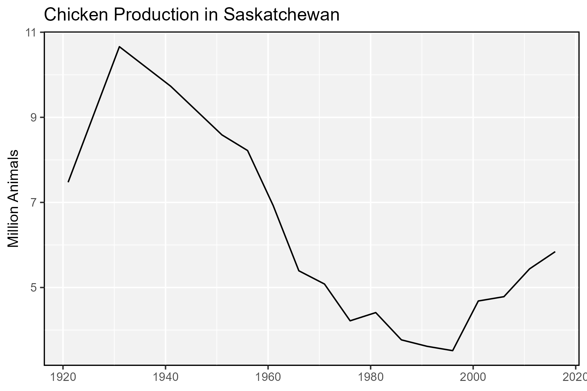
agData_STATCAN_Population
# Get Data
xx <- agData_STATCAN_Population %>% as_tibble()
xx
## # A tibble: 3,783 x 5
## Area Year Month Unit Value
## <fct> <dbl> <dbl> <chr> <int>
## 1 Canada 1946 1 Persons 12188000
## 2 Canada 1946 4 Persons 12241000
## 3 Canada 1946 7 Persons 12316000
## 4 Canada 1946 10 Persons 12393000
## 5 Canada 1947 1 Persons 12450000
## 6 Canada 1947 4 Persons 12507000
## 7 Canada 1947 7 Persons 12576000
## 8 Canada 1947 10 Persons 12646000
## 9 Canada 1948 1 Persons 12710000
## 10 Canada 1948 4 Persons 12773000
## # ... with 3,773 more rows
# Prep data for an example plot
xx <- xx %>% filter(Area == "Saskatchewan", Month == 1)
# Plot
mp <- ggplot(xx, aes(x = Year, y = Value / 1000000)) +
geom_line() +
theme_agData() +
labs(title = "Population in Saskatchewan, Canada",
y = "Million People", x = NULL)
ggsave("Intro_agData_agData_STATCAN_Population.png", mp, width = 6, height = 4)
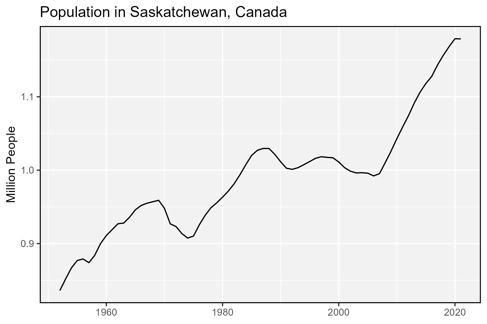
agData_USDA_Crops
# Get Data
xx <- agData_USDA_Crops %>% as_tibble()
xx
## # A tibble: 2,555 x 6
## Area Year Crop Measurement Unit Value
## <fct> <dbl> <fct> <fct> <fct> <dbl>
## 1 USA 1866 Wheat Area harvested hectares 6235402.
## 2 USA 1866 Wheat Yield t/ha 0.74
## 3 USA 1866 Wheat Production tonnes 4618555.
## 4 USA 1866 Maize Area harvested hectares 12147460.
## 5 USA 1866 Maize Yield t/ha 1.52
## 6 USA 1866 Maize Production tonnes 18563517.
## 7 USA 1866 Barley Area harvested hectares 305133.
## 8 USA 1866 Barley Yield t/ha 1.29
## 9 USA 1866 Barley Production tonnes 393972.
## 10 USA 1866 Oats Area harvested hectares 3211183.
## # ... with 2,545 more rows
# List Measurements
xx %>% distinct(Measurement, Unit)
## # A tibble: 4 x 2
## Measurement Unit
## <fct> <fct>
## 1 Area harvested hectares
## 2 Yield t/ha
## 3 Production tonnes
## 4 Area seeded hectares
# List Area
xx %>% distinct(Area)
## # A tibble: 1 x 1
## Area
## <fct>
## 1 USA
# List Crops
xx %>% distinct(Crop)
## # A tibble: 5 x 1
## Crop
## <fct>
## 1 Wheat
## 2 Maize
## 3 Barley
## 4 Oats
## 5 Sorghum
# Spread data to wide format
xx %>% select(-Unit) %>% spread(Measurement, Value) %>% arrange(Year)
## # A tibble: 697 x 7
## Area Year Crop `Area harvested` `Area seeded` Production Yield
## <fct> <dbl> <fct> <dbl> <dbl> <dbl> <dbl>
## 1 USA 1866 Barley 305133. NA 393972. 1.29
## 2 USA 1866 Maize 12147460. NA 18563517. 1.52
## 3 USA 1866 Oats 3211183. NA 3583486. 1.12
## 4 USA 1866 Wheat 6235402. NA 4618555. 0.74
## 5 USA 1867 Barley 428158. NA 519272. 1.21
## 6 USA 1867 Maize 12996896. NA 20166102. 1.55
## 7 USA 1867 Oats 3308713. NA 3433043. 1.04
## 8 USA 1867 Wheat 6773634. NA 5739154. 0.847
## 9 USA 1868 Barley 430586. NA 505120. 1.17
## 10 USA 1868 Maize 14210954. NA 23358645. 1.64
## # ... with 687 more rows
# Prep data for an example plot
xx <- xx %>% filter(Crop == "Wheat", Measurement == "Production")
# Plot
mp <- ggplot(xx, aes(x = Year, y = Value / 1000000, group = Area)) +
geom_line() +
theme_agData() +
labs(title = "Wheat Production in the United States of America",
y = "Million Tonnes", x = NULL)
ggsave("Intro_agData_USDA_Crops.png", mp, width = 6, height = 4)
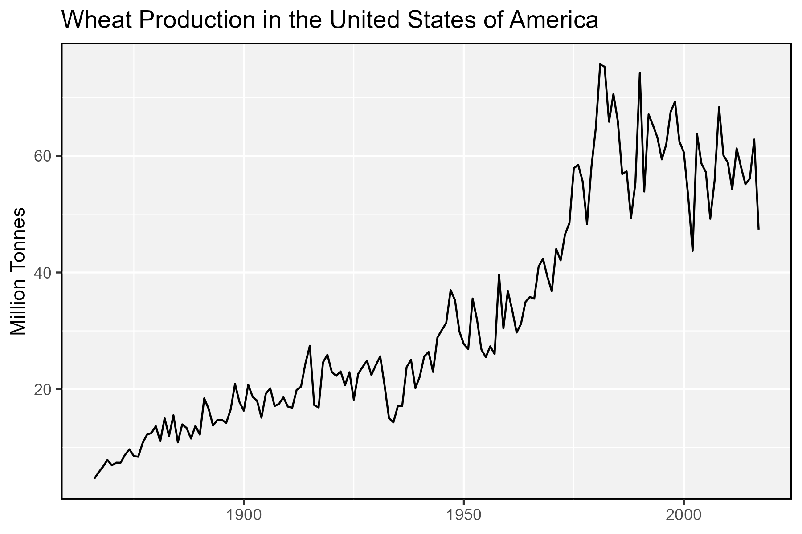
agData_USDA_GE_Crops
# Get Data
xx <- agData_USDA_GE_Crops %>% as_tibble()
xx
## # A tibble: 2,832 x 6
## Area Year Crop Measurement Unit Value
## <chr> <int> <chr> <chr> <chr> <dbl>
## 1 Illinois 2000 Genetically engineer~ Insect-resistant~ Percent of ~ 13
## 2 Indiana 2000 Genetically engineer~ Insect-resistant~ Percent of ~ 7
## 3 Iowa 2000 Genetically engineer~ Insect-resistant~ Percent of ~ 23
## 4 Kansas 2000 Genetically engineer~ Insect-resistant~ Percent of ~ 25
## 5 Michigan 2000 Genetically engineer~ Insect-resistant~ Percent of ~ 8
## 6 Minnesota 2000 Genetically engineer~ Insect-resistant~ Percent of ~ 28
## 7 Missouri 2000 Genetically engineer~ Insect-resistant~ Percent of ~ 20
## 8 Nebraska 2000 Genetically engineer~ Insect-resistant~ Percent of ~ 24
## 9 Ohio 2000 Genetically engineer~ Insect-resistant~ Percent of ~ 6
## 10 South Dakota 2000 Genetically engineer~ Insect-resistant~ Percent of ~ 35
## # ... with 2,822 more rows
# List Measurements
xx %>% distinct(Measurement, Unit)
## # A tibble: 10 x 2
## Measurement Unit
## <chr> <chr>
## 1 Insect-resistant (Bt) only Percent of corn planted
## 2 Herbicide-tolerant only Percent of corn planted
## 3 Stacked gene varieties Percent of corn planted
## 4 All GE varieties Percent of corn planted
## 5 Insect-resistant (Bt) only Percent of upland cotton planted
## 6 Herbicide-tolerant only Percent of upland cotton planted
## 7 Stacked gene varieties Percent of upland cotton planted
## 8 All GE varieties Percent of upland cotton planted
## 9 Herbicide-tolerant only Percent of all soybeans planted
## 10 All GE varieties Percent of all soybeans planted
# List Area
xx %>% distinct(Area)
## # A tibble: 23 x 1
## Area
## <chr>
## 1 Illinois
## 2 Indiana
## 3 Iowa
## 4 Kansas
## 5 Michigan
## 6 Minnesota
## 7 Missouri
## 8 Nebraska
## 9 Ohio
## 10 South Dakota
## # ... with 13 more rows
# List Crops
xx %>% distinct(Crop)
## # A tibble: 3 x 1
## Crop
## <chr>
## 1 Genetically engineered (GE) corn varieties
## 2 Genetically engineered (GE) upland cotton varieties
## 3 Genetically engineered (GE) soybean varieties
# Spread data to wide format
xx %>% select(-Unit) %>% spread(Measurement, Value) %>% arrange(Year)
## # A tibble: 878 x 7
## Area Year Crop `All GE varietie~ `Herbicide-tole~ `Insect-resista~
## <chr> <int> <chr> <dbl> <dbl> <dbl>
## 1 Arkansas 2000 Genetic~ 43 43 NA
## 2 Arkansas 2000 Genetic~ 70 23 33
## 3 California 2000 Genetic~ 24 17 3
## 4 Georgia 2000 Genetic~ 82 32 18
## 5 Illinois 2000 Genetic~ 17 3 13
## 6 Illinois 2000 Genetic~ 44 44 NA
## 7 Indiana 2000 Genetic~ 11 4 7
## 8 Indiana 2000 Genetic~ 63 63 NA
## 9 Iowa 2000 Genetic~ 30 5 23
## 10 Iowa 2000 Genetic~ 59 59 NA
## # ... with 868 more rows, and 1 more variable: Stacked gene varieties <dbl>
# Prep data for an example plot
xx <- xx %>% filter(Crop == "Genetically engineered (GE) corn varieties",
Area == "U.S.")
# Plot
mp <- ggplot(xx, aes(x = Year, y = Value, color = Measurement)) +
geom_line() +
theme_agData() +
labs(title = "Adoption of GE Maize",
y = "Percent", x = NULL)
ggsave("Intro_agData_USDA_GE_Crops.png", mp, width = 6, height = 4)
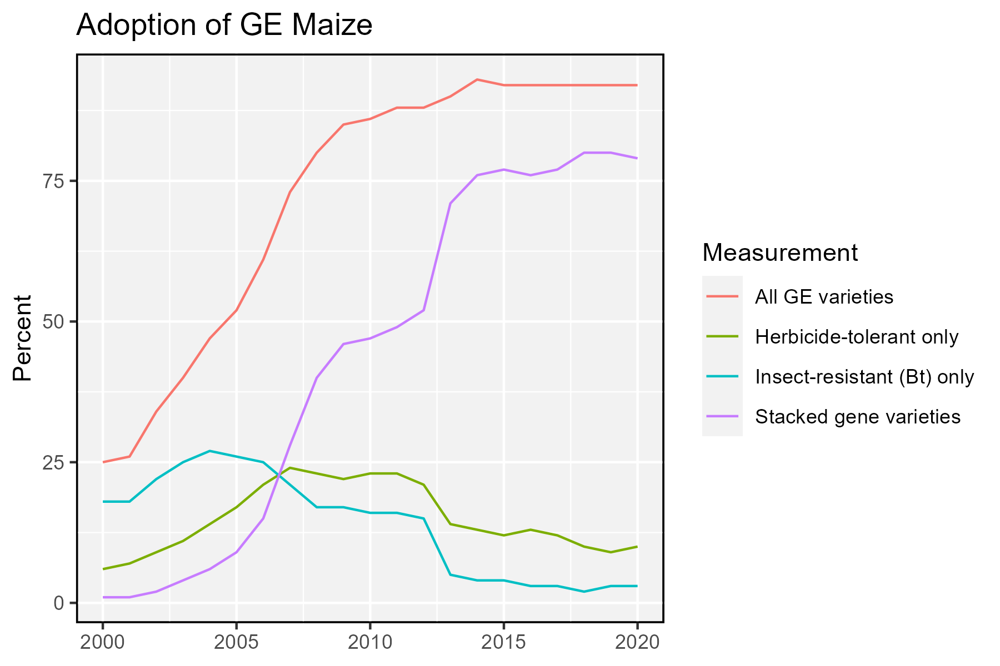
agData_USDA_TFP
# Get Data
xx <- agData_USDA_TFP %>% as_tibble()
xx
## # A tibble: 120,602 x 4
## Area Year Measurement Value
## <chr> <dbl> <chr> <dbl>
## 1 South Africa 1961 Ag TFP 52.9
## 2 Cameroon 1961 Ag TFP 74.7
## 3 Central African Republic 1961 Ag TFP 100.
## 4 Congo, DR 1961 Ag TFP 128.
## 5 Congo, Republic 1961 Ag TFP 117.
## 6 Equatorial Guinea 1961 Ag TFP 187.
## 7 Gabon 1961 Ag TFP 127.
## 8 Sao Tome and Principe 1961 Ag TFP 125.
## 9 Burundi 1961 Ag TFP 116.
## 10 Kenya 1961 Ag TFP 66.7
## # ... with 120,592 more rows
# List Measurements
xx %>% distinct(Measurement)
## # A tibble: 12 x 1
## Measurement
## <chr>
## 1 Ag TFP
## 2 Inputs
## 3 Output
## 4 Ag Land
## 5 Cropand
## 6 Irrig
## 7 Pasture
## 8 Labor
## 9 Livestock
## 10 Machinery
## 11 Fertilizer
## 12 Feed
# Prep data for an example plot
xx <- xx %>% filter(Area == "World", Measurement == "Ag TFP")
# Plot
mp <- ggplot(xx, aes(x = Year, y = Value / 1000000)) +
geom_line() +
theme_agData() +
labs(title = "World Total Factor Productivity",
y = "Ag TFP", x = NULL)
ggsave("Intro_agData_USDA_TFP.png", mp, width = 6, height = 4)
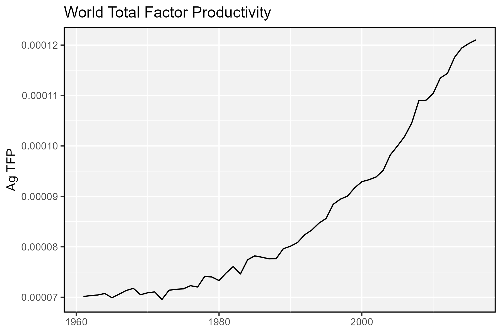
agData_ISAAA_Area
# Get Data
xx <- agData_ISAAA_Area %>% filter(Measurement == "Area") %>%
as_tibble()
xx
## # A tibble: 23 x 5
## Area Year Measurement Unit Value
## <chr> <dbl> <chr> <chr> <dbl>
## 1 World 1996 Area Hectares 2800000
## 2 World 1997 Area Hectares 12800000
## 3 World 1998 Area Hectares 27800000
## 4 World 1999 Area Hectares 39900000
## 5 World 2000 Area Hectares 44200000
## 6 World 2001 Area Hectares 52600000
## 7 World 2002 Area Hectares 58700000
## 8 World 2003 Area Hectares 67700000
## 9 World 2004 Area Hectares 81000000
## 10 World 2005 Area Hectares 90000000
## # ... with 13 more rows
# Plot
mp <- ggplot(xx, aes(x = Year, y = Value / 1000000)) +
geom_line() +
theme_agData() +
labs(title = "Global Area of Genetically Engineered Crops",
y = "Million Hectares", x = NULL)
ggsave("Intro_agData_ISAAA_Area.png", mp, width = 6, height = 4)
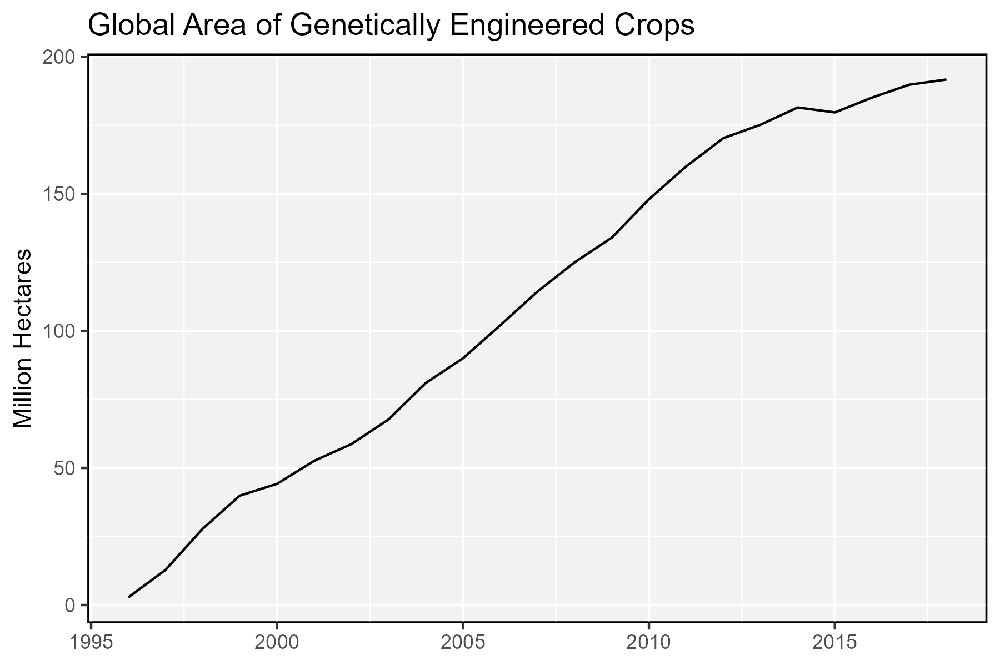
agData_ISAAA_Country
# Get Data
xx <- agData_ISAAA_Country %>% as_tibble()
xx
## # A tibble: 1,787 x 5
## Area Year Measurement Unit Value
## <chr> <dbl> <chr> <chr> <dbl>
## 1 USA 1996 Area Hectares 1500000
## 2 China 1996 Area Hectares 1100000
## 3 Argentina 1996 Area Hectares 100000
## 4 Canada 1996 Area Hectares 100000
## 5 Australia 1996 Area Hectares 100000
## 6 Mexico 1996 Area Hectares 100000
## 7 USA 1997 Area Hectares 8100000
## 8 Argentina 1997 Area Hectares 1400000
## 9 Canada 1997 Area Hectares 1300000
## 10 Australia 1997 Area Hectares 100000
## # ... with 1,777 more rows
# List Area
xx %>% distinct(Area)
## # A tibble: 43 x 1
## Area
## <chr>
## 1 USA
## 2 China
## 3 Argentina
## 4 Canada
## 5 Australia
## 6 Mexico
## 7 Spain
## 8 France
## 9 South Africa
## 10 Portugal
## # ... with 33 more rows
# Prep data for an example plot
xx <- xx %>% filter(Area == "Canada", Measurement == "Area")
# Plot
mp <- ggplot(xx, aes(x = Year, y = Value / 1000000)) +
geom_line() +
theme_agData() +
labs(title = "Area of Genetically Engineered in Canada",
y = "Million Hectares", x = NULL)
ggsave("Intro_agData_ISAAA_Country.png", mp, width = 6, height = 4)
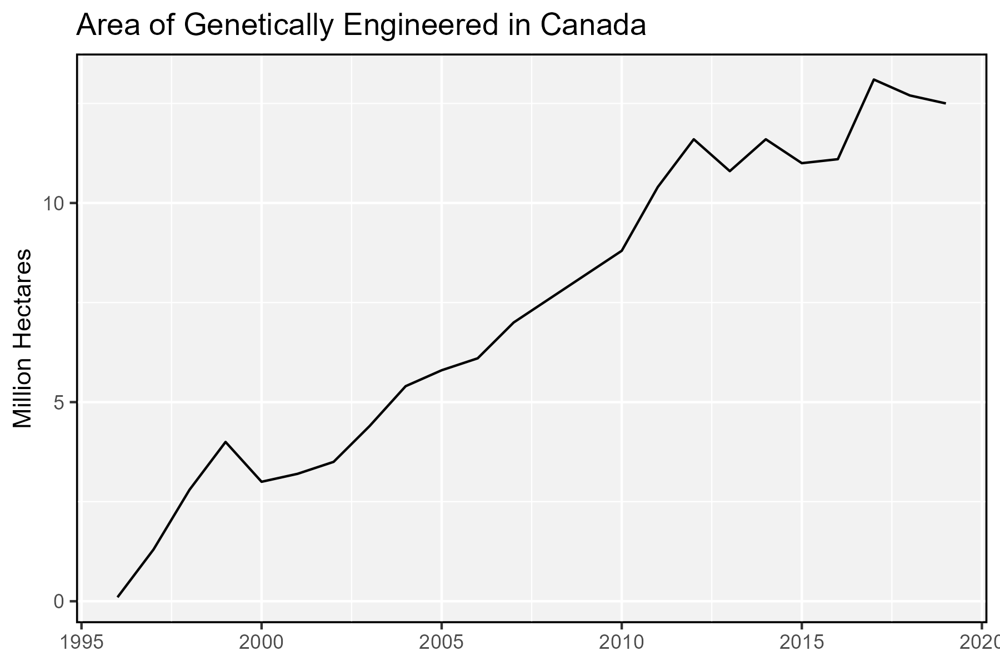
agData_ISAAA_Crop
# Get Data
xx <- agData_ISAAA_Crop %>% as_tibble()
xx
## # A tibble: 614 x 5
## Year Crop Measurement Unit Value
## <dbl> <chr> <chr> <chr> <dbl>
## 1 1996 Soybean Area Hectares 500000
## 2 1996 Maize Area Hectares 300000
## 3 1996 Tabacco Area Hectares 1000000
## 4 1996 Cotton Area Hectares 800000
## 5 1996 Canola Area Hectares 100000
## 6 1996 Tomato Area Hectares 100000
## 7 1996 Potato Area Hectares 100000
## 8 1997 Soybean Area Hectares 5100000
## 9 1997 Maize Area Hectares 3200000
## 10 1997 Tabacco Area Hectares 1600000
## # ... with 604 more rows
# List Crops
xx %>% distinct(Crop)
## # A tibble: 13 x 1
## Crop
## <chr>
## 1 Soybean
## 2 Maize
## 3 Tabacco
## 4 Cotton
## 5 Canola
## 6 Tomato
## 7 Potato
## 8 Squash
## 9 Papaya
## 10 Rice
## 11 Others
## 12 Alfalfa
## 13 Sugar beet
# Prep data for an example plot
xx <- xx %>% filter(Crop %in% c("Soybean","Maize"),
Measurement == "Area")
# Plot
mp <- ggplot(xx, aes(x = Year, y = Value / 1000000, color = Crop)) +
geom_line() +
theme_agData() +
labs(title = "Area of Genetically Engineered Maize and Soybean",
y = "Million Hectares", x = NULL)
ggsave("Intro_agData_ISAAA_Crop.png", mp, width = 6, height = 4)
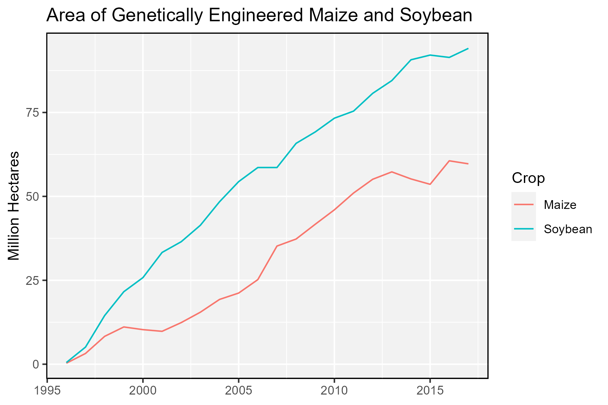
agData_ISAAA_CropPercent
# Get Data
xx <- agData_ISAAA_CropPercent %>% as_tibble()
xx
## # A tibble: 213 x 5
## Year Crop Measurement Unit Value
## <dbl> <chr> <chr> <chr> <dbl>
## 1 1999 Soybean Area Hectares 72000000
## 2 1999 Canola Area Hectares 25000000
## 3 1999 Cotton Area Hectares 34000000
## 4 1999 Maize Area Hectares 140000000
## 5 2000 Soybean Area Hectares 72000000
## 6 2000 Cotton Area Hectares 34000000
## 7 2000 Canola Area Hectares 25000000
## 8 2000 Maize Area Hectares 140000000
## 9 2001 Soybean Area Hectares 72000000
## 10 2001 Cotton Area Hectares 34000000
## # ... with 203 more rows
# List Crops
xx %>% distinct(Crop)
## # A tibble: 5 x 1
## Crop
## <chr>
## 1 Soybean
## 2 Canola
## 3 Cotton
## 4 Maize
## 5 Others
# Prep data for an example plot
xx <- xx %>% filter(Crop %in% c("Soybean","Maize"),
Measurement == "Percent")
# Plot
mp <- ggplot(xx, aes(x = Year, y = Value, color = Crop)) +
geom_line() +
theme_agData() +
labs(title = "Percent of Global Crop Area Dedicated to GE Varieties",
y = "%", x = NULL)
ggsave("Intro_agData_ISAAA_CropPercent.png", mp, width = 6, height = 4)
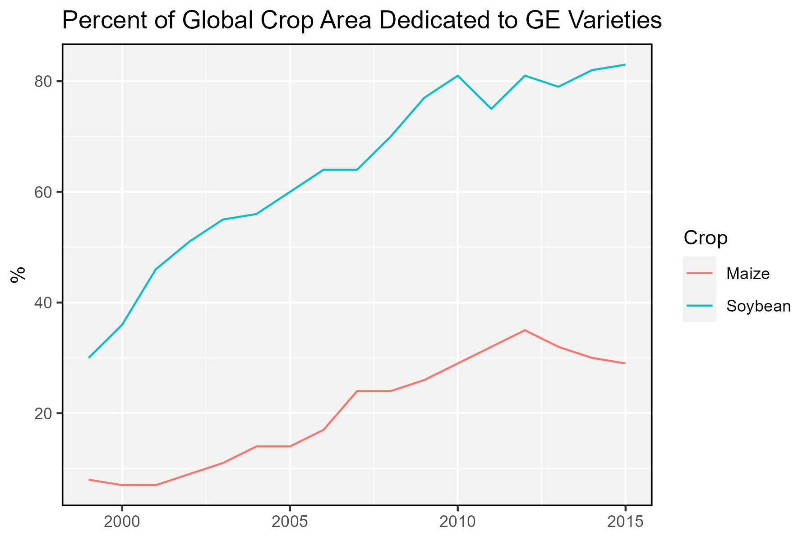
agData_ISAAA_DVDDVG
# Get Data
xx <- agData_ISAAA_DVDDVG %>% as_tibble()
xx
## # A tibble: 88 x 5
## Area Year Measurement Unit Value
## <chr> <dbl> <chr> <chr> <dbl>
## 1 Industrialized countries 1996 Area Hectares 1600000
## 2 Developing countries 1996 Area Hectares 1200000
## 3 Industrialized countries 1997 Area Hectares 9500000
## 4 Developing countries 1997 Area Hectares 3300000
## 5 Industrialized countries 1998 Area Hectares 23400000
## 6 Developing countries 1998 Area Hectares 4400000
## 7 Industrialized countries 1999 Area Hectares 32800000
## 8 Developing countries 1999 Area Hectares 7100000
## 9 Industrialized countries 2000 Area Hectares 33500000
## 10 Developing countries 2000 Area Hectares 10700000
## # ... with 78 more rows
# Prep data
xx <- xx %>% filter(Unit == "Percent")
# Plot
mp <- ggplot(xx, aes(x = Year, y = Value, color = Area)) +
geom_line() +
theme_agData() +
labs(title = "Percentage of Genetically Engineered Crops",
y = "%", x = NULL)
ggsave("Intro_agData_ISAAA_DVDDVG.png", mp, width = 6, height = 4)
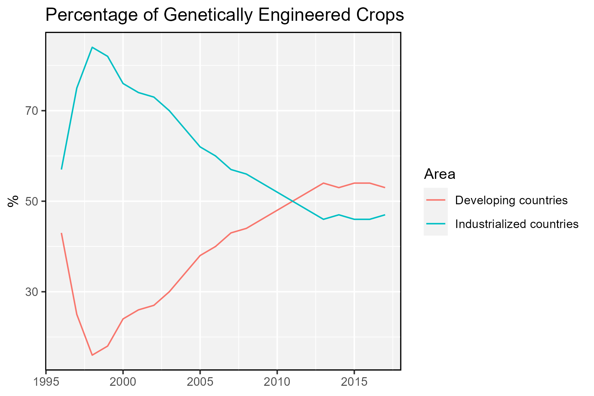
agData_ISAAA_Value
# Get Data
xx <- agData_ISAAA_Value %>% as_tibble()
xx
## # A tibble: 22 x 3
## Year Unit Value
## <dbl> <chr> <dbl>
## 1 1996 Billion USD 0.093
## 2 1997 Billion USD 0.591
## 3 1998 Billion USD 1.56
## 4 1999 Billion USD 2.35
## 5 2000 Billion USD 2.43
## 6 2001 Billion USD 2.93
## 7 2002 Billion USD 3.47
## 8 2003 Billion USD 4.05
## 9 2004 Billion USD 5.09
## 10 2005 Billion USD 5.71
## # ... with 12 more rows
# Plot
mp <- ggplot(xx, aes(x = Year, y = Value)) +
geom_line() +
theme_agData() +
labs(title = "Value of Genetically Engineered Seed",
y = "Billion USD", x = NULL)
ggsave("Intro_agData_ISAAA_Value.png", mp, width = 6, height = 4)
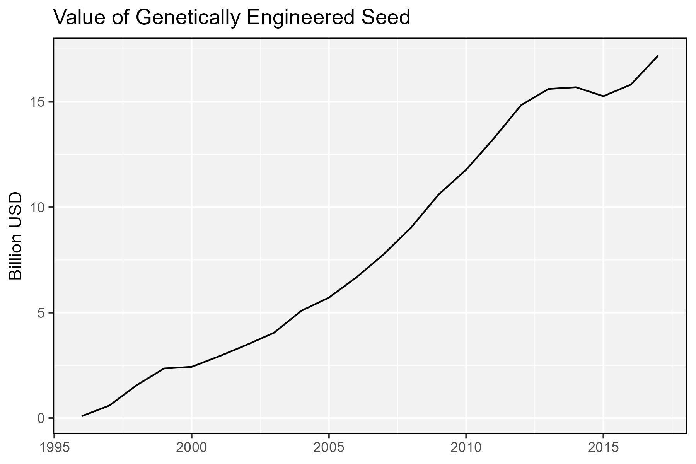
agData_UK_Yields
# Get Data
xx <- agData_UK_Yields %>% as_tibble()
xx
## # A tibble: 1,818 x 6
## Area Crop Year Measurement Unit Value
## <chr> <fct> <int> <fct> <fct> <dbl>
## 1 United Kingdom Wheat 1270 Yield tonnes/ha 0.522
## 2 United Kingdom Wheat 1271 Yield tonnes/ha 0.471
## 3 United Kingdom Wheat 1272 Yield tonnes/ha 0.685
## 4 United Kingdom Wheat 1273 Yield tonnes/ha 0.483
## 5 United Kingdom Wheat 1274 Yield tonnes/ha 0.443
## 6 United Kingdom Wheat 1275 Yield tonnes/ha 0.788
## 7 United Kingdom Wheat 1276 Yield tonnes/ha 0.482
## 8 United Kingdom Wheat 1277 Yield tonnes/ha 0.669
## 9 United Kingdom Wheat 1278 Yield tonnes/ha 0.845
## 10 United Kingdom Wheat 1279 Yield tonnes/ha 0.482
## # ... with 1,808 more rows
# List Measurements
xx %>% distinct(Measurement, Unit)
## # A tibble: 1 x 2
## Measurement Unit
## <fct> <fct>
## 1 Yield tonnes/ha
# List Crops
xx %>% distinct(Crop)
## # A tibble: 3 x 1
## Crop
## <fct>
## 1 Wheat
## 2 Barley
## 3 Oats
# Prep data
xx <- xx %>% filter(Crop == "Wheat", !is.na(Value))
# Plot
mp <- ggplot(xx, aes(x = Year, y = Value)) +
geom_line() +
theme_agData() +
labs(title = "UK Wheat Yields", y = "Tonnes / Hectare", x = NULL)
ggsave("Intro_agData_UK_Yields.png", mp, width = 6, height = 4)
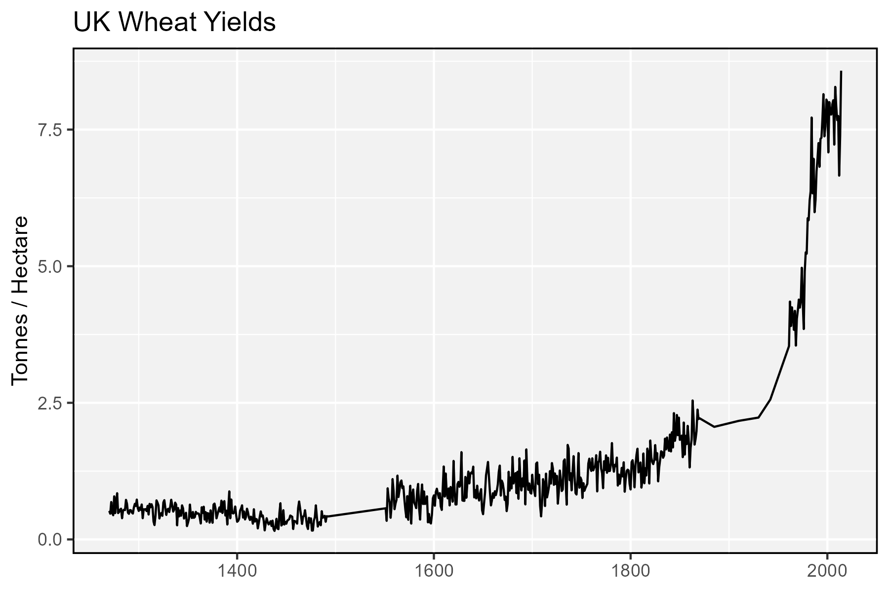
agData_MaizeContest
# Get Data
xx <- agData_MaizeContest %>% as_tibble()
xx
## # A tibble: 108 x 5
## Year Crop Measurement Unit Value
## <dbl> <chr> <chr> <chr> <dbl>
## 1 2010 Maize A Non-Irrigated Bushels/Acre 306.
## 2 2010 Maize AA Non-Irrigated Bushels/Acre 300.
## 3 2010 Maize A No-Till/Strip-Till Non-Irrigated Bushels/Acre 294.
## 4 2010 Maize AA No-Till/Strip-Till Non-Irrigated Bushels/Acre 300.
## 5 2010 Maize No-Till/Strip-Till Irrigated Bushels/Acre 368.
## 6 2010 Maize Irrigated Bushels/Acre 341
## 7 2011 Maize A Non-Irrigated Bushels/Acre 288.
## 8 2011 Maize AA Non-Irrigated Bushels/Acre 322.
## 9 2011 Maize A No-Till/Strip-Till Non-Irrigated Bushels/Acre 294.
## 10 2011 Maize AA No-Till/Strip-Till Non-Irrigated Bushels/Acre 298.
## # ... with 98 more rows
# Prep Data
xx <- xx %>% filter(Unit == "Tonnes/Hectare")
# Plot
mp <- ggplot(xx, aes(x = Year, y = Value, color = Measurement)) +
geom_line() +
theme_agData() +
labs(title = "USA Maize Yield Contests",
y = "Tonnes / Hectare", x = NULL)
ggsave("Intro_agData_MaizeContest.png", mp, width = 6, height = 4)
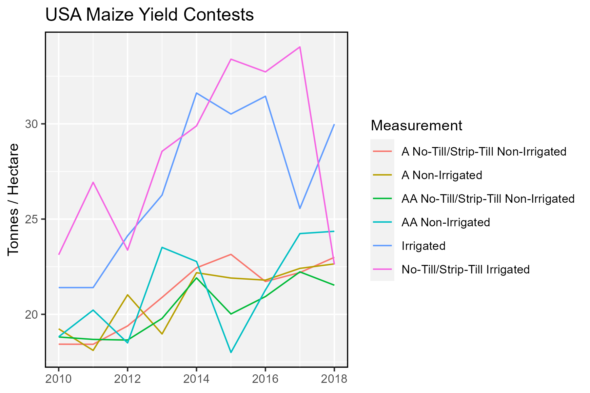
agData_PeopleInAg
# Get Data
xx <- agData_PeopleInAg %>% as_tibble()
xx
## # A tibble: 7,009 x 5
## Area Year Measurement Unit Value
## <chr> <int> <chr> <chr> <dbl>
## 1 Belgium 1856 Total Number 712000
## 2 Belgium 1866 Total Number 705000
## 3 Belgium 1880 Total Number 674000
## 4 Belgium 1890 Total Number 640000
## 5 Belgium 1900 Total Number 616000
## 6 Belgium 1910 Total Number 585000
## 7 Belgium 1920 Total Number 525000
## 8 Belgium 1930 Total Number 505000
## 9 Belgium 1947 Total Number 364000
## 10 Belgium 1961 Total Number 213000
## # ... with 6,999 more rows
# Prep Data
xx <- xx %>% filter(Area == "Germany")
# Plot
mp <- ggplot(xx, aes(x = Year, y = Value)) +
geom_line() +
theme_agData() +
labs(title = "Percent of Population in Agriculture",
y = NULL, x = NULL)
ggsave("Intro_agData_People.png", mp, width = 6, height = 4)
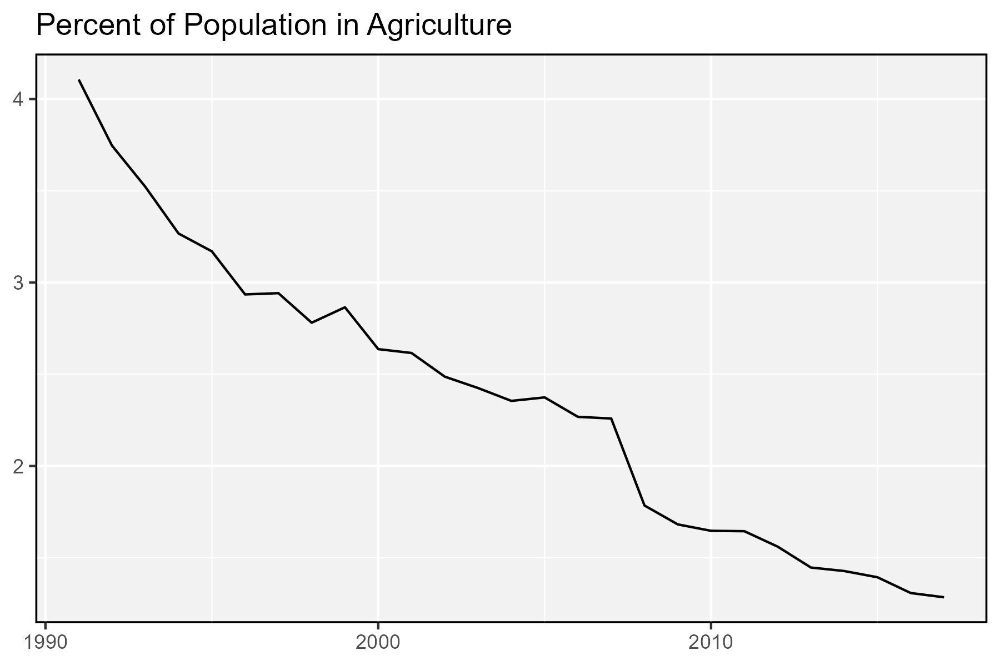
agData_PopFert
# Get Data
xx <- agData_PopFert %>% as_tibble()
xx
## # A tibble: 158 x 4
## Area Year Measurement Value
## <chr> <int> <chr> <dbl>
## 1 World 1900 Actual 1650000000
## 2 World 1901 Actual 1659947572
## 3 World 1902 Actual 1669996608
## 4 World 1903 Actual 1680114897
## 5 World 1904 Actual 1690269397
## 6 World 1905 Actual 1700426220
## 7 World 1906 Actual 1710550627
## 8 World 1907 Actual 1720607035
## 9 World 1908 Actual 1730559024
## 10 World 1909 Actual 1740369356
## # ... with 148 more rows
# List Measurements
xx %>% distinct(Measurement)
## # A tibble: 3 x 1
## Measurement
## <chr>
## 1 Actual
## 2 Without Fertilizers
## 3 Fed by Fertilizers
# Plot
mp <- ggplot(xx, aes(x = Year, y = Value, color = Measurement)) +
geom_line() +
theme_agData() +
labs(y = NULL, x = NULL)
ggsave("Intro_agData_PopFert.png", mp, width = 6, height = 4)
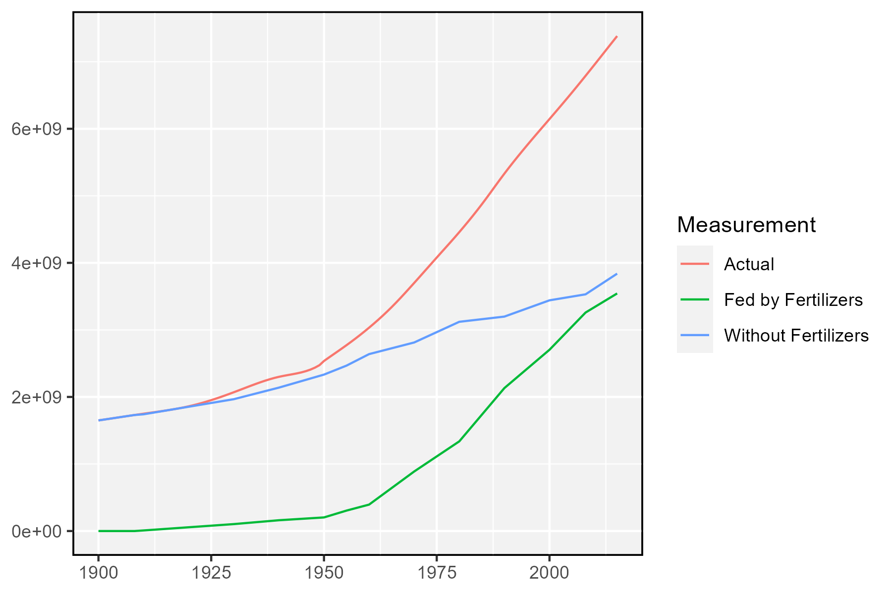
© Derek Michael Wright www.dblogr.com/